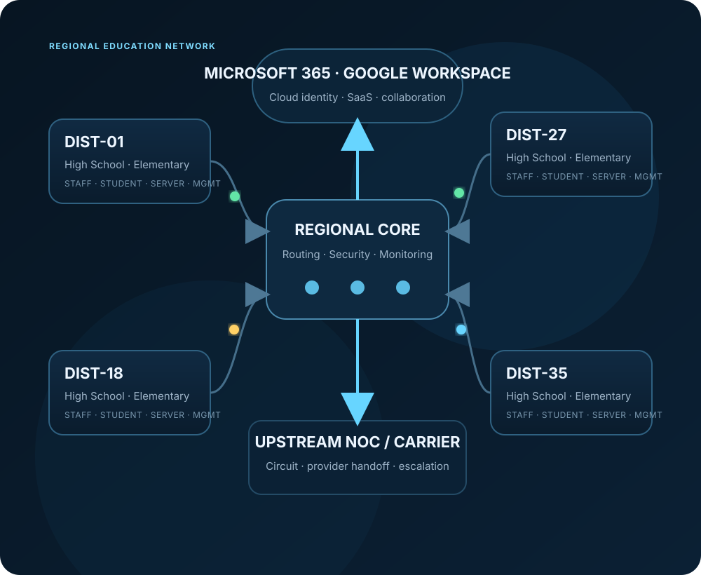
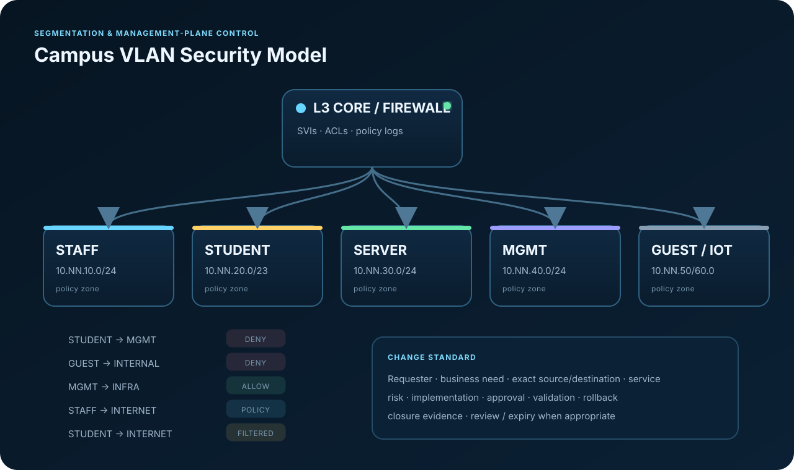
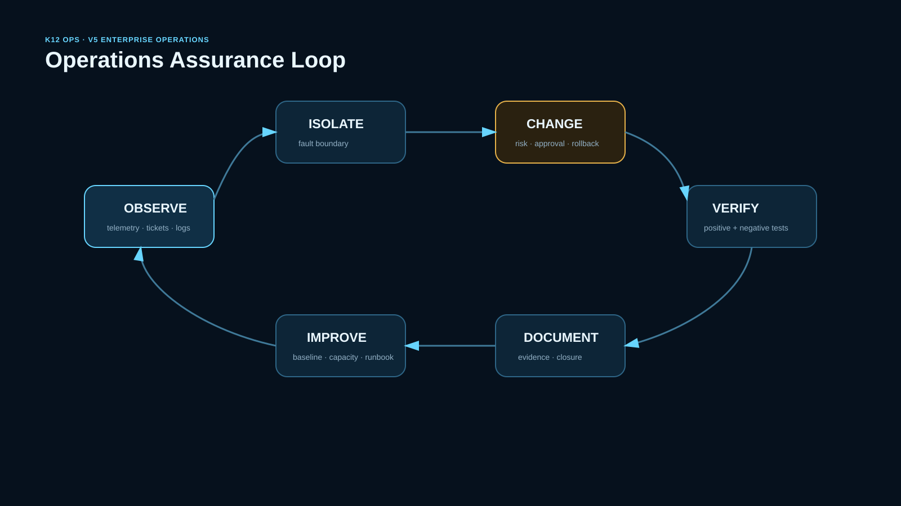

Local first
Prove endpoint, DHCP, DNS, gateway, VLAN, and local services before escalating upstream.
A fully synthetic but operationally realistic case study for supporting 35 school districts across endpoint, identity, switching, routing, firewall, web filtering, WAN, cloud, monitoring, escalation, and change control.

A classroom application that “doesn’t work” can be an endpoint problem, a bad DHCP lease, DNS failure, VLAN issue, filter block, firewall rule, circuit fault, identity policy, or SaaS outage. The project is built around proving where known-good behavior stops before changing configuration.
Every case produces a defensible chain: scope → evidence → fault domain → action → verification → documentation.
Designed to show how endpoint, identity, LAN, security, WAN, and cloud dependencies interact instead of treating each technology as an isolated skill.

Prove endpoint, DHCP, DNS, gateway, VLAN, and local services before escalating upstream.
Filtering and firewall changes are scoped, approved, reversible, and verified against control groups.
NOC/vendor escalation includes timestamps, source, destination, path tests, interface/circuit IDs, and recent-change status.
Three featured cases include synthetic raw evidence, decision points, remediation, verification, and escalation-quality documentation.
All metrics below are explicitly synthetic demonstration data generated from the lab inventory and ticket set.
Search the synthetic 35-district inventory.
| District | Sites | Assets | WAN | Platforms | Demo health |
|---|
Scripts are intentionally read-only or validation-focused. The goal is consistent evidence collection before making changes.
Endpoint state, routes, resolver configuration, domain secure channel, Entra registration, MDM logs, and event evidence.
Inventory validation, health scoring, incident triage, report generation, and scenario simulation using Python standard library only.
Interfaces, routing, neighbor state, DNS, sockets, gateway reachability, resolver health, and service checks.
VLAN/SVI structure, ACL design, DHCP relay, OSPF/BGP troubleshooting, SNMPv3, and firewall policy examples.
School support requires balancing instructional access, operational continuity, identity controls, segmentation, student safety, and documented exceptions.

Requester · business need · exact scope · risk · implementation · validation · rollback · approval · closure.
v5 adds operational engineering capabilities that turn the case study into a small static-data operations platform.
Trace prerequisites and blast radius across DNS, identity, filtering, firewall, WAN, cloud, and instructional services.
Compare device snapshots against a security baseline and prioritize management-plane or segmentation deviations.
Use synthetic monthly P95 WAN history and a transparent trend forecast to identify districts approaching planning thresholds.
Measure first-response and restoration attainment by priority without presenting synthetic data as employer production metrics.
Evaluate scope, rollback, validation, and approval readiness before implementation.
Package a case investigation with raw artifacts plus a manifest for repeatable handoff and review.

The project deliberately separates simulated scale from verified implementation so it never presents synthetic operations as production experience.
Health, inventory, and triage behavior validated in CI.
11 / 11 tests35 districts checked for schema, addressing, required VLANs, and consistency.
35 / 35 districtsInternal links, referenced diagrams, image files, and required portfolio sections checked.
Automated checkerRFC1918/documentation ranges, synthetic organizations, and read-only diagnostic emphasis.
Explicitly labeledShow the end-to-end service path and identify major fault domains.
Open the WAN case and explain evidence-first isolation.
Show PowerShell/Python/Bash collectors and why they are read-only first.
Open the evidence package and show the upstream NOC handoff.
Finish with CI, test results, change control, and the safe-lab boundary.